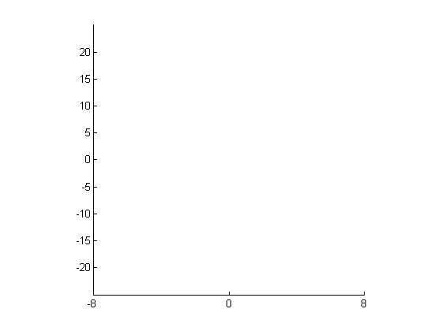
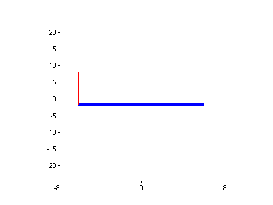
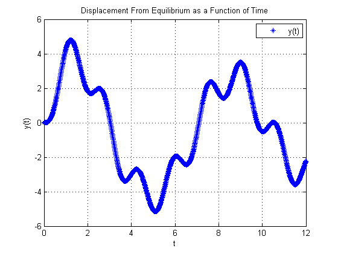
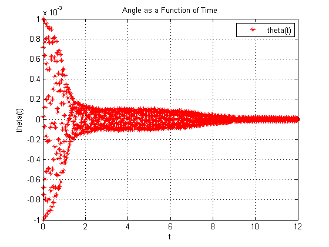

Contents
main function
Josh Grant - MAT 128C Project 3 - 5/28/14
clc;
close all;
clearvars;
user defined parameters
h = 0.01; % step size p = 500; % number of steps per point a = -6; b = 6; n = ceil((b-a)/(h*p)); % rounds result up to nearest integer n1 = ceil((b-a)/(h))
n1 =
1200
t=zeros([p+1,1]); y=zeros([p+1,4]);
int=[a b]; ic=[0 0 .001 0]; % ic=[y(1,1) y(1,2) y(1,3) y(1,4)]; %y(1,1) = y, y(1,3) = theta y(1,:)=ic; % first row of y matrix is initial conditions t(1)=a; % first time point is a len=6;
plot setup
clf; % clear current figure set(gca, 'XLim',[-8 8], 'YLim',[-25 25], 'XTick',[-8 0 8], 'YTick',... [-20:5:20],'Drawmode','fast','Visible','on','NextPlot','add'); cla; % clear current axis axis square % make aspect ratio 1 to 1 road=line('color','b','LineStyle','-','LineWidth',5,'erase',... 'xor','xdata',[],'ydata',[]); lcable=line('color','r','LineStyle','-','LineWidth',1,'erase',... 'xor','xdata',[],'ydata',[]); rcable=line('color','r','LineStyle','-','LineWidth',1,'erase',... 'xor','xdata',[],'ydata',[]);
iteration
for k=1:n for i=1:p t(i+1)=t(i)+h; % y(i+1,:)=trapstep(t(i),y(i,:),h); y(i+1,:)=RK4(t(i),y(i,:),h); % tplot(1,:)=(0:h:(n*p*h)); % yplot(i+1,:)=y(i+1,:); end % tplot(k+1)=t(k)+h; % yplot(k+1,:)=trapstep(tplot(k),y(k,:),h); k n y(1,:)=y(p+1,:); t(1)=t(p+1); z1(k)=y(1,1); z3(k)=y(1,3); c = len * cos(y(1,3)); s = len * sin(y(1,3)); set(road, 'xdata', [-c c], 'ydata', [-s-y(1,1) s-y(1,1)]) set(lcable, 'xdata', [-c -c], 'ydata', [-s-y(1,1) 8]) set(rcable, 'xdata', [c c], 'ydata', [s-y(1,1) 8]) drawnow; pause(h) end
k =
1
n =
3
k =
2
n =
3
k =
3
n =
3
 plotting y(t) and theta(t)
yplot(1,:)=ic; % for passing values through iteration loop to outside tplot1(1)=0; for j=1:n1 tplot1(j+1)=tplot1(j)+h; yplot(j+1,:)=RK4(tplot1(j),yplot(j,:),h); end % tplot1=linspace(0,n*h,length(yplot));
y(t) graph
figure('Name','Oscillations of Center of Bridge','NumberTitle','on','Color','white') % gives windows a title (tutorial plot), labels the title figure 1, and make the border color cyan plot(tplot1,yplot(:,1)','*b'); % Adds a scatter plot for (t,y(t)) grid on % Adds gridlines to the plot title('Displacement From Equilibrium as a Function of Time') legend('y(t)','Location','NorthEast') % gives plot a legend for i,j,k, puts its location in northeast xlabel('t') % Add x label ylabel('y(t)') % Add y label % axis([-8 8 -15 15]) % Sets axis values ([xmin xmax ymin ymax])
theta(t) graph
figure('Name','Oscillations of Center of Bridge','NumberTitle','on','Color','white') % gives windows a title (tutorial plot), labels the title figure 1, and make the border color cyan plot(tplot1,yplot(:,3)','*r'); % Adds a scatter plot for (t,y(t)) grid on % Adds gridlines to the plot title('Angle as a Function of Time') legend('theta(t)','Location','NorthEast') % gives plot a legend for i,j,k, puts its location in northeast xlabel('t') % Add x label ylabel('theta(t)') % Add y label max(y(:,3)) ic(3) strmag = ['Magnification Factor = ', num2str(max(y(:,3)/ic(3)))]; display(strmag);
ans = 8.5630e-005 ans = 1.0000e-003 strmag = Magnification Factor = 0.08563